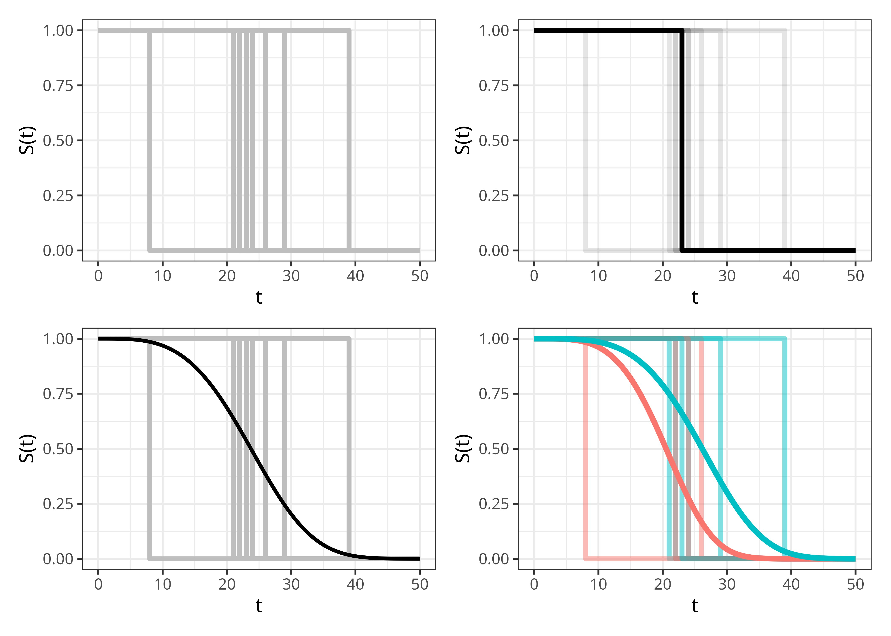
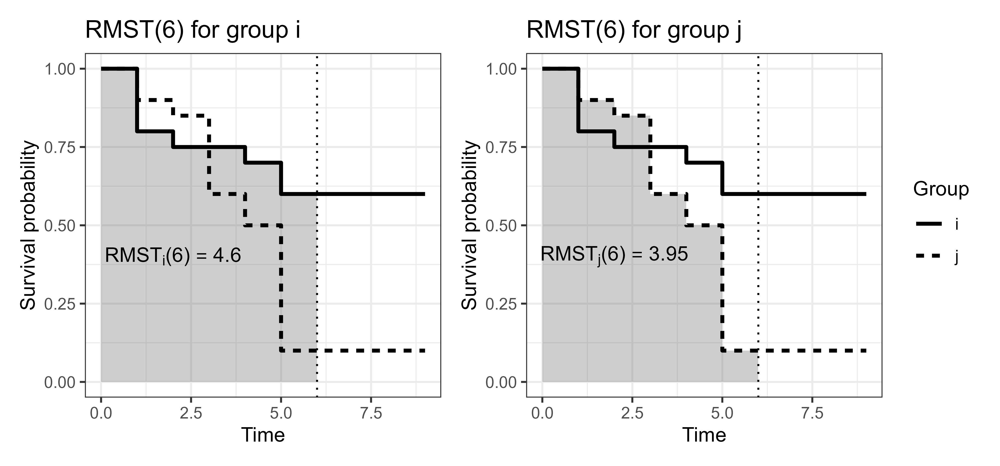

5 Survival Task
This page is a work in progress and minor changes will be made over time.
A machine learning task specifies a mathematical problem to be solved by an algorithm (Section 2.2). Formally, a task is a mapping \(f: \mathcal{X}\rightarrow \mathcal{Y}\) with three components: a description of the input space \(\mathcal{X}\), a description of the target space \(\mathcal{Y}\), and a description of the estimation procedure that learns \(f\) from data. A survival task is a machine learning task in which the target space \(\mathcal{Y}_S\) corresponds to a survival prediction type (Section 5.1), and the learning algorithm \(f_S\) is designed to handle censoring and/or truncation while targeting that prediction type (as in the methods introduced in Part III).
Throughout this chapter let \(\mathcal{X}\subseteq \mathbb{R}^{n \times p}\) be a set representing the covariate matrix. The censoring mechanism does not affect the definition of the prediction types, hence this chapter does not distinguish between right-, left-, or interval-censoring when defining \(\mathcal{Y}_S\).
5.1 Survival prediction types
Survival prediction types describe the codomain \(\mathcal{Y}_S\), four are commonly defined:
- Survival distribution: Probability of the event occurring over time;
- Relative risk: A scalar quantity representing the risk of event that is meaningful only in comparison to other individuals in the sample;
- Survival time or time-to-event: A point prediction of the time at which the event of interest will occur;
- Prognostic index: A risk score usually based on a linear predictor.
Survival distribution predictions are probabilistic as they return a full distribution over time. Survival time predictions are deterministic point predictions in the sense that they return a single scalar value, though uncertainty remains due to underlying variance. Relative risk and prognostic index predictions do not directly predict when or if the event of interest will occur, instead they produce scores that can be used to rank or compare an individual’s risk to others in the same cohort.
To distinguish the types of ‘risk’, it may be helpful to view survival distribution predictions as a form of absolute risk prediction. Derived summaries from distributions, such as the probability of experiencing the event at a given time, have a direct probabilistic interpretation and can be meaningfully understood without comparison to others in the sample. By contrast, the other prediction types are relative risk predictions: their scale is directly tied to others in the sample and are most (in some cases only) interpretable through comparisons.
These prediction types are closely related. Relative risks and survival time predictions can be derived from a predicted survival distribution, though the reverse does not hold in general as a single survival time or risk score does not uniquely determine a probability distribution. Both prognostic index and time-to-event predictions can usually be interpreted as a type of relative risk prediction. Under (often strict) assumptions, prediction types can be converted between each other. In fact, many algorithms target a single prediction type but internally compute another as an intermediate step, this pattern will appear throughout Part III, for example with the prognostic index being computed in linear models before being transformed into a survival distribution prediction (some algorithmic examples in Chapter 11).
Despite their close connection, it is essential to keep discussion of prediction types distinct as they are not directly comparable. For example, it is not meaningful to compare a relative risk score from one model to a survival distribution prediction of another without first transforming the distribution prediction. Even within a single prediction type, interpretations can be confused. For example, in some literature a larger value of a risk score implies higher risk of event, whereas in other sources, a larger value implies lower risk. Distinction of prediction types is also critical for evaluation as each prediction type naturally aligns with different types of metrics, a topic returned to throughout Part II.
In applied predictive modelling, direct survival time prediction is uncommon as time-to-event predictions are difficult to interpret and evaluate under censoring. Instead, practitioners often report distribution-derived summaries such as \(\tau\)-year survival probabilities or the predicted median survival time. Similarly, the prognostic index is more commonly used for model interpretation or inference, whereas relative risk predictions are common in applications such as resource allocation and risk stratification. Though, as will be seen below, a prognostic index can usually be interpreted as a relative risk.
Figure 5.1 illustrates the different information provided by the different prediction types based on a Weibull accelerated failure time model (Section 11.3) . The prognostic index is omitted as it would visually look the same as the relative risk prediction type. Top-left panel shows the tabular survival data using the six patients from the tumor data set (Table 3.1). The top-right panel shows predicted survival times, for each observation this is a single scalar value representing the estimated event time (here, the predicted expected survival time after operation \(\hat{E}[T \mid \mathbf{x}]\) with its 95% confidence interval). The bottom-left panel visualizes relative risk predictions; here the score is the negative log of the predicted expected survival time, centred at zero across the six patients, so positive values indicate higher than average risk and negative values lower than average risk. Finally, the bottom-right panel shows survival distribution predictions, where each observation’s predicted survival function \(\hat{S}(\tau \mid \mathbf{x})\) is shown over time.
![Graphical illustration of prediction types for six tumor patients. Top-left panel is a table with columns id, age, sex, complications, days, and status, with each row's id cell coloured to match the patient's colour in the other panels. Top-right panel is horizontal lollipops (line with a filled circle at the endpoint) showing predicted expected survival times for each patient, ranging from about 1700 to 3200 days. Bottom-left panel is vertical lollipops showing predicted relative risk scores centred around zero, indicating different risk profiles for each patient. Bottom-right panel is six smooth survival probability curves, one per patient, decreasing over time from one toward zero.](Figures/survtsk/predict_types.png)
tumor data set and a Weibull accelerated failure time model. Tabular survival data (top-left) can be used by an algorithm to make various prediction types, each conveying different information. Survival times (top-right) provide a single number estimating the time until an event takes place. Relative risk scores (bottom-left) compare the risk of event between subjects within the same sample. Survival distributions (bottom-right) estimate the probability of the event taking place over time.
5.2 Predicting distributions
Predicting a survival distribution means estimating the probability of an individual experiencing the event of interest from time-point \(0\) to \(\infty\). In principle, such predictions are defined over the continuous \(\mathbb{R}_{\geq 0}\). However, in practice it is more common for predictions to be made over the discrete \(\mathbb{N}_0\). This reflects the fact that many algorithms rely on discrete, non-parametric estimators or piecewise-constant representations of the underlying distribution prediction.
Theoretically, distributional prediction can target any of the distribution defining functions introduced in Section 3.1, though predicting \(S(t)\) or \(h(t)\) is most common. Mathematically, the survival task associated with the distribution prediction type is defined by \(f_S: \mathcal{X}\rightarrow \mathcal{S}\), where \(\mathcal{S}\subseteq \operatorname{Distr}(\mathbb{R}_{\geq 0})\) denotes a set of distributions on \(\mathbb{R}_{\geq 0}\). In the most general multi-state setting, this generalizes to \(f_S: \mathcal{X}\rightarrow [0,1]^{q\times q}\) for \(q\) different states, this simplifies to \(f_S: \mathcal{X}\rightarrow \mathcal{S}^q\) in the competing risks setting.
In applied settings, communicating a predicted distribution over time is a daunting task for both clinician and patient. Instead, distribution predictions are commonly used to derive time-specific survival probabilities, which represent the probability of surviving beyond a relevant time point, for example the probability of being alive ten years after a diagnosis of Huntingdon’s disease. Predicting ‘\(\tau\)-year survival probabilities’ is sometimes mistakenly framed as a classification problem, in which a model predicts whether an event will occur by a fixed time. This is misleading as traditional classification models cannot incorporate observations censored before the time horizon of interest, and discarding such observations would bias any results (Loh et al. 2025); see also Chapter 18.
Survival distributions can also be used for decision making by establishing thresholds on survival probabilities. For example, in an engineering context, a survival model might be used to estimate the reliability of a jet engine over time, with a maintenance rule defined such that the engine is serviced once the predicted survival probability falls below a predefined reliability threshold (which could be as high as 0.95).
Another source of potential confusion can arise when trying to interpret a survival distribution prediction for an individual in the single-event setting. In reality, an event either does or does not occur at a specific time, so it is natural to ask what it means to predict an individual’s survival probability distribution. Figure 5.2 visualizes what the survival distribution prediction aims to achieve. The top-left panel shows the idealized ‘real-world’ survival curves for multiple individuals, each represented by a Heaviside step function that drops from \(1\) to \(0\) when the individual experiences the event. The top-right panel highlights a curve for a single event. The bottom-left panel shows the goal of survival distribution predictions: a smooth survival function that captures the average behavior of these individual events across the population. Finally, the bottom-right panel shows the same events stratified by a single binary covariate, producing one survival distribution prediction for each subgroup. In a machine learning task, this stratification process is generalized by conditioning on the full covariate vector, yielding one predicted survival distribution for each individual.

5.3 Predicting relative risks
Predicting relative risk scores refers to estimating a value that ranks individuals in a cohort according to their predicted risk of experiencing the event. These scores are meaningful only in comparison to other individuals in the same cohort used to train the model; they cannot be interpreted in isolation, nor can they be compared to scores produced by a different model, except under very strong assumptions. The interpretation of these scores can also differ across model classes, parameterizations, and even software implementations. For example, some models produce scores where larger values correspond to higher risk, whereas others produce scores where smaller values correspond to higher risk. To avoid ambiguity, throughout this book larger values always correspond to higher risk and smaller values correspond to lower risk. In machine learning terms, the relative risks prediction is the problem of estimating \(f_S: \mathcal{X}\rightarrow \mathbb{R}\).
As an example of this prediction type, consider three individuals, \(\{i,j,k\}\) with predicted risks \(\{0.5, 10, 0.1\}\), respectively. From these values, two broad types of conclusion can be drawn.
- Conclusions comparing individuals
- The corresponding ranks for \(\{i,j,k\}\) are \(\{2,3,1\}\).
- \(k\) has the lowest risk and \(j\) the highest risk.
- The risk of \(i\) is slightly higher than that of \(k\), whereas \(j\)’s risk is substantially higher than both.
- Conclusions comparing risk groups:
- Thresholding at \(0.4\) classifies \(k\) as low-risk and \(i\) and \(j\) as high-risk.
- Thresholding at \(1.0\) classifies \(i\) and \(k\) as low-risk and \(j\) as high-risk.
As in other domains, differences in relative risks should always be interpreted cautiously. In the example above, \(j\)’s relative risk is 100 times that of \(k\); however, if \(k\)’s absolute probability of experiencing the event is \(0.0001\), then \(j\)’s absolute probability remains small at \(0.01\).
Estimation and interpretation of risks in the competing risks settings follows similar principles. Though, one must take care to clearly identify if the task of interest is to predict risks for each of the \(q\) causes, \(f_S: \mathcal{X}\rightarrow \mathbb{R}^q\), or a single all-cause risk. In multi-state models, the notion of a single scalar ‘risk’ is less clearly defined and any risk-based summaries derived from survival probabilities should be interpreted with caution.
5.3.1 Distributions and risks
In general it is not possible to uniquely recover a survival distribution from a relative risk score, except in very specific cases (discussed in Section 5.5). The reverse direction, deriving a risk score from a predicted survival distribution, is more common. One stable approach to compute a risk score is by calculating the ‘ensemble mortality’ or ‘expected mortality’ (Ishwaran et al. 2008). The expected mortality for an individual \(i\) is defined as
\[ \sum_{\tau \in \mathcal{T}} -\log(\hat{S}_i(\tau)) = \sum_{\tau \in \mathcal{T}} \hat{H}_i(\tau), \]
where \(\hat{S}_i\) is the predicted survival function, \(\hat{H}_i\) is the corresponding cumulative hazard, and \(\mathcal{T}\) is the set of observed time points. This quantity represents the expected number of events among individuals with similar covariate profiles to \(i\). A larger value therefore indicates that \(i\) has a higher risk profile, hence being a suitable quantity to represent a relative risk score. As a concrete example, consider two individuals, \(i\) and \(j\), with predicted survival probabilities at times \(\mathcal{T}= \{0,1,2,3\}\):
\[ \begin{aligned} &(\tau, \hat{S}_i(\tau)) = (0, 1), (1, 0.8), (2, 0.4), (3, 0.15), \\ &(\tau, \hat{S}_j(\tau)) = (0, 1), (1, 0.6), (2, 0.4), (3, 0.35). \end{aligned} \]
From these values alone, it is not immediately obvious which individual would be considered at higher risk. The corresponding cumulative hazards are
\[ \begin{aligned} &(\tau, \hat{H}_i(\tau)) = (0, 0), (1, 0.10), (2, 0.40), (3, 0.82), \\ &(\tau, \hat{H}_j(\tau)) = (0, 0), (1, 0.22), (2, 0.40), (3, 0.46). \end{aligned} \]
Using the ensemble mortality approach, this yields relative risk scores of
\[ \begin{aligned} &\sum_{\tau \in \mathcal{T}} \hat{H}_i(\tau) = 0 + 0.10 + 0.40 + 0.82 = 1.32, \\ &\sum_{\tau \in \mathcal{T}} \hat{H}_j(\tau) = 0 + 0.22 + 0.40 + 0.46 = 1.08. \end{aligned} \]
Under this method, individual \(i\) is considered to be at 1.2 times higher risk than individual \(j\).
5.4 Predicting survival times
Predicting a survival time refers to estimating when an individual will experience the event of interest. Mathematically, this corresponds to estimating \(f_S: \mathcal{X}\rightarrow \mathbb{R}_{>0}\), that is, predicting a single non-negative value on \([0,\infty]\).
From a practical perspective, the expected time-to-event may appear to be an attractive prediction type as it initially appears intuitive and easy to interpret. However, evaluating survival time point predictions is limited and generally ill-advised and reliance on such predictions is therefore challenging. To illustrate this, consider an individual censored at time \(t=5\). There is no way to know if the event would have occurred at \(\tau=6\) or \(\tau=600\); all that is known is that the event did not occur before \(t=5\). As a result, it is impossible to assess how close a time prediction is to the true, unobserved event time.
Even when a prediction is clearly incorrect, the magnitude of its error cannot be quantified. For the same individual censored at \(t=5\), suppose a model predicts a survival time of \(\hat{t} = 3\). This prediction is clearly wrong as the event did not occur before \(t=5\). However, the prediction might only be slightly wrong if the true event time were \(\tau=6\), or extremely wrong if the true event time were \(\tau=600\).
For these reasons, this book recommends predicting and evaluating survival distributions and then deriving time-oriented summaries.
In the event history analysis setting, a single ‘survival time’ is even more ill-defined as it is ambiguous whether this refers to the time until a specific event or until any event takes place. For multi-state models, one could estimate sojourn times, which represent the expected time spent in a given state and can be derived from estimated transition probabilities. Sojourn times are particularly well defined in Markov and semi-Markov models, where they follow from stochastic process theory. These derivations are beyond the scope of this book; for further details, see, for example, Ibe (2013).
5.4.1 Times and risks
Converting a survival time prediction to a risk prediction is conceptually straightforward, as survival times encode natural ordering. An individual predicted to survive longer is, by definition, at lower overall risk. Formally, if \(\hat{t}_i,\hat{t}_j\) denote predicted survival times and \(\hat{r}_i,\hat{r}_j\) are associated rankings, then
\[ \hat{t}_i > \hat{t}_j \Rightarrow \hat{r}_i < \hat{r}_j. \]
The reverse transformation, from ranking to survival time, is generally not possible without strong assumptions as relative risk scores are usually abstract quantities that do not map directly to meaningful survival times.
5.4.2 Times and distributions
Moving from a survival time to a distribution prediction is uncommon for the reasons just discussed. Given the availability of survival models that directly predict distributions, and the difficulties in evaluating survival time predictions, there is little practical value in constructing a survival distribution from a predicted survival time. Although, as in regression settings, it is certainly possible to construct a distribution around a central estimate by assuming a parametric form, for example \(\operatorname{TruncatedNormal}(\hat{y}, \sigma, a=0, b=\infty)\) where \(\sigma\) represents an assumed or estimated standard deviation; such approaches rely on strong assumptions and are rarely used in practice.
It is more common to reduce a prediction from a probability distribution to a survival time by attempting to compute the mean or median of the distribution. When there is no censoring, the expected survival time can be computed from the survival function using the ‘Darth Vader rule’ (Muldowney et al. 2012):
\[ \mathbb{E}[Y] = \int^\infty_0 S_Y(y) \ \,\mathrm{d}y \tag{5.1}\]
However, this rule is often unusable in survival datasets as censoring can lead to estimated survival distributions that are improper (Section 3.1.1). A valid probability distribution for a random variable \(Y\) must satisfy: \(\int f_Y \,\mathrm{d}y= 1\), \(S_Y(0) = 1\) and \(S_Y(\infty) = 0\). This last condition is often violated in survival distribution predictions, particularly when non-parametric estimators are used as intermediate steps before constructing full distribution predictions (some examples in Section 11.2). To see why this is the case, recall from Section 3.5.2.1 that the Kaplan-Meier estimator is defined as:
\[ \hat{S}_{KM}(\tau) = \prod_{k:t_{(k)}\leq \tau}\left(1-\frac{d_{t_{(k)}}}{n_{t_{(k)}}}\right). \]
This estimator reaches zero only if all individuals at risk at the final observed time-point experience the event: \(d_{t_{(k)}} = n_{t_{(k)}}\). In practice, there is almost always administrative censoring at the final time-point and as such \(d_{t_{(k)}} < n_{t_{(k)}}\) and hence \(\hat{S}(\infty) > 0\).
Heuristics have been proposed to address this issue, including linear extrapolation of the survival curve to zero, or an immediate drop to zero at the final time-point. However, these can introduce bias into estimated survival times (Han and Jung 2022; Sonabend et al. 2022). The survival time could also be reported as the median survival time, defined as the time at which the predicted survival probability drops to \(0.5\). However, this quantity is only defined if the survival curves falls below \(0.5\) within the observed follow-up period, which is never guaranteed.
An alternative approach is to summarize the predicted distribution with the restricted mean survival time (RMST) (Han and Jung 2022; Andersen et al. 2004). Rather than integrating over the entire time axis as in (5.1), the RMST truncates the integral at a finite horizon:
\[ \operatorname{RMST}(\tau) = \int^\tau_0 S_Y(y) \,\mathrm{d}y. \]
It follows from (5.1) that \(\operatorname{RMST}(\infty) = \mathbb{E}[Y]\) . Whereas (5.1) represents the average survival time over \([0,\infty)\), the RMST represents the average survival time up to \(\tau\). Equivalently,
\[ \operatorname{RMST}(\tau) = \mathbb{E}[\min(Y, \tau)], \tag{5.2}\]
which treats all events occurring after \(\tau\) as if they occurred at \(\tau\). The RMST is well-defined even when the predicted distribution is improper, provided that \(\tau\) lies within the range of observed follow-up times.
Say individuals are observed over a five-year time period and administrative censoring is present so that \(\mathbb{E}[Y]\) cannot be reliably computed. One can compute \(\operatorname{RMST}(5)\) to provide an interpretable lower bound on the mean survival time: \(\operatorname{RMST}(5) \leq \mathbb{E}[Y]\). This results in a meaningful statement such as: “the average survival time is at least \(\operatorname{RMST}(5)\)” (Figure 5.3).
The RMST is commonly used to understand the effect of covariates, particularly treatments when in a healthcare context. For example, suppose a clinician is interested in understanding how a specific treatment affects two-year and five-year survival for a given disease. Assume patient \(i\) received the treatment and patient \(j\) did not, and that their predicted survival curves are
\[ \begin{aligned} (\tau, \hat{S}_i(\tau)) = (0, 1.00), (1, 0.80), (2, 0.75), (3, 0.75), (4, 0.70), (5, 0.60), \\ (\tau, \hat{S}_j(\tau)) = (0, 1.00), (1, 0.90), (2, 0.85), (3, 0.60), (4, 0.50), (5, 0.00). \\ \end{aligned} \]
The corresponding RMSTs at \(\tau=2\) and \(\tau=5\) are (using discrete sum approximations over unit time intervals)
\[ \begin{aligned} \operatorname{RMST}_i(2) &\approx 1.00 + 0.80 + 0.75 = 2.55, \\ \operatorname{RMST}_j(2) &\approx 1.00 + 0.90 + 0.85 = 2.75, \\ \operatorname{RMST}_i(5) &\approx 1.00 + 0.80 + 0.75 + 0.75 + 0.70 + 0.60 = 4.60, \\ \operatorname{RMST}_j(5) &\approx 1.00 + 0.90 + 0.85 + 0.60 + 0.50 + 0.00 = 3.85. \\ \end{aligned} \]
Over the two-year follow-up period, patient \(j\) is expected to remain event-free for approximately \(0.20\) years (\(2.4\) months) longer than patient \(i\). In contrast, over the five-year interval, patient \(i\) is expected to remain event-free for approximately \(0.75\) years (\(9\) months) longer than patient \(j\). Computing the RMST at these two thresholds provides interpretable summaries: the treatment offers no short-term benefit within two years (and may even bring some risks) but confers a meaningful advantage over a longer five-year horizon.
These results (visualized in Figure 5.3) illustrate a key feature of the RMST. By fixing the time horizon \(\tau\), the contribution of survival differences after \(\tau\) is ignored. In the above example, although patient \(j\)’s survival probability drops sharply to zero, this late drop in survival probability contributes relatively little to the area under the curve up to \(\tau=5\). Even if patient \(i\) were to survive many years longer than patient \(j\), the RMST at \(\tau=5\) treats all events occurring after five years as if they occurred at that time, a consequence of (5.2). As a result, the RMST difference over the five-year horizon remains modest, even though the long term survival difference, if it were estimable, could be substantial.

5.5 Prognostic index predictions
In medical terminology (often used in survival analysis), a prognostic index is a quantity that summarizes an individual’s risk of experiencing the event of interest based on observed risk factors. Given covariates, \(\mathbf{X}\in \mathbb{R}^{n \times p}\), and coefficients, \(\boldsymbol{\beta}\in \mathbb{R}^p\), the linear predictor is defined as \(\boldsymbol{\eta}:= \mathbf{X}\boldsymbol{\beta}\). Applying a transformation \(g\), which could simply be the identity function \(g(x) = x\), yields a prognostic index, \(g(\boldsymbol{\eta})\). A prognostic index can serve several purposes, including:
- Scaling and/or normalization: simple transformation can improve interpretability and visualization;
- Ensuring meaningful results: for example, \(g(\boldsymbol{\eta}) = \exp(\boldsymbol{\eta})\) transforms covariates to act multiplicatively on the resulting prognostic score, which is appropriate for models in which the covariates rescale the underlying risk instead of inducing additive shifts (explored further in Section 11.2);
- Interpretability conventions: for example, \(g(\boldsymbol{\eta}) = -\boldsymbol{\eta}\) might be sufficient to larger values correspond to higher risk.
In event history analysis, prognostic indices are defined analogously, but with a cause-specific interpretation.
5.5.1 Prognostic index, risks, and times
A prognostic index is naturally interpreted as a relative risk score. When used in this way, it is essential that both the magnitude and sign of the index align with the convention adopted above, meaning that larger values must correspond to a higher risk of experiencing the event.
The reverse transformation, from risk score to prognostic index, does not hold in general. For example, models introduced in Chapter 14 and Chapter 13 directly predict risk scores that cannot be expressed as transformations of covariates. Therefore, reporting a prognostic index emphasizes that the predicted quantity is interpretable in its own right, much like a survival time prediction.
There is no direct mapping between a prognostic index and survival time. However, a prognostic index may be used to construct a distribution prediction, from which a time-based summary can be derived.
5.5.2 Prognostic index and distributions
In general, a prognostic index cannot be uniquely recovered from a predicted survival distribution without additional modeling assumptions. By contrast, constructing a survival distribution conditional on a prognostic index is very common in survival analysis. Many survival models predict survival distributions by first estimating a group-wise survival distribution, often using nonparametric estimators (Section 3.5.2), then combine this estimate with an individual’s prognostic index. The manner in which these components are combined is algorithm-specific and discussed in detail in Part III.
As a concrete illustration, one class of model known as ‘proportional hazards models’, construct survival predictions of the form
\[ S(\tau \mid \mathbf{x}) = S_0(\tau)^{\exp(\eta)}, \]
where \(S_0(\tau)\) is known as the baseline survival function, and \(\eta\) is the individual’s prognostic index.